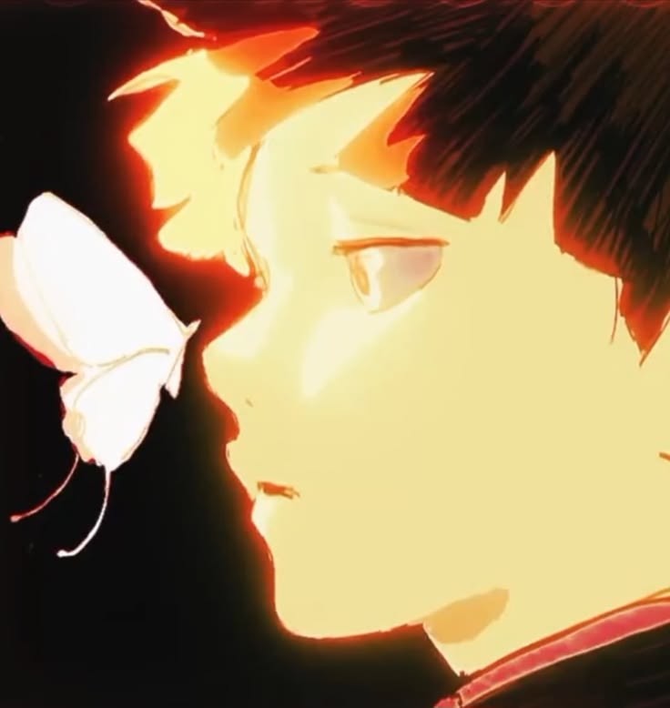

HELLO, WELCOME TO MY PORTOFOLIO
Saya adalah seorang digital artist, freelance illustrator, dan mahasiswa Teknik Informatika yang tertarik pada dunia seni dan teknologi.
Lihat Karya Saya
Perkenalkan, saya Muhamad Fiqri Al Ma'ruf. Saya memiliki ketertarikan pada dunia teknologi informasi, desain digital, dan ilustrasi. Saat ini saya sedang menempuh pendidikan S1 Teknik Informatika di Universitas Pamulang.
Karya ilustrasi digital dan eksplorasi desain kreatif.
Desain poster dan media edukasi.
Pengembangan website dan pembelajaran pemrograman.
Tertarik bekerja sama atau berdiskusi? silahkan hubungi saya.
Kirim Email